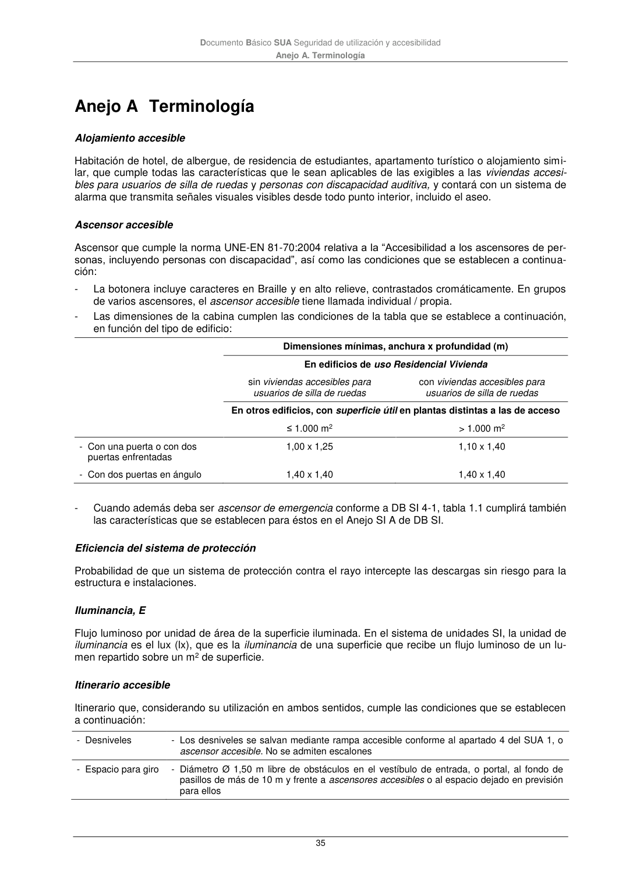

DB-SUA · Itinerario accesible · versión 2022-06-14 · capa oficial
Formatos: JSON compacto · Markdown · PDF fuente
Ámbito del documento · texto del ámbito · documento y tablas
ID técnico a0128 · PDF pág. 35 · jerarquía no validada por persona · contrastado con el literal de la página 35 (marcador PDF); no validado por persona · padre: a0108
Documento Básico SUA Seguridad de utilización y accesibilidad

PDF fuente redistribuible: copia fiel enlazada en esta página (SHA256 verificado).